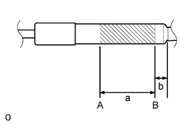

BACK WINDOW STAY > DISPOSAL |
| 1. DISPOSE OF BACK WINDOW STAY ASSEMBLY LH |
|  |
Horizontally secure the back window stay in a vise with the piston-rod pulled out.
Wear safety glasses. Gradually cut an area between A and B shown in the illustration using a metal saw and gradually release the gas.
| Area | Specified Condition |
| a | 80 mm (3.15 in.) |
| b | 20 mm (0.787 in.) |